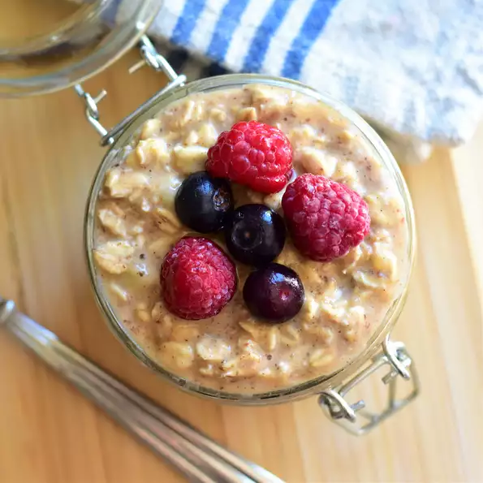

Overnight Oats

Description
A little sweetness is all you need and vanilla extract makes it taste gourmet. You can get creative with this recipe and use berries instead of bananas, flax seeds instead of chia, or any unsweetened nut milk or nut butter that you fancy.
Ingredients
- 1 banana, sliced
- 1 tablespoon unsweetened almond butter, or more to taste
- 1 1/2 teaspoons chia seeds
- 1 cup rolled oats
- 1 cup unsweetened almond milk
- 1 teaspoon pure maple syrup
- 1/4 teaspoon vanilla extract